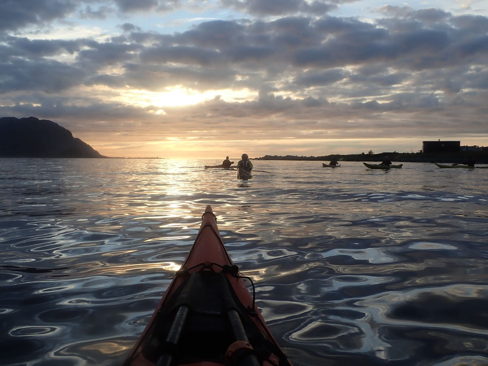

Mørkepadling
Padling etter mørkets frembrudd

Om kurset
Mørkepadling er noe helt spesielt. Når solen har gått ned og mørket legger seg over fjorden, opplever du naturen på en helt ny måte. Du hører havet tydeligere, ser stjernene klarere, og kjenner kajakkens bevegelser i kroppen. Turen går i Ellingsøyfjorden med rolige forhold og varer inntil 4 timer. En uforglemmelig opplevelse. Utstyr er ikke inkludert i kursprisen, men du kan leie kajakk og padleutstyr — leie av kajakk og drakt kommer i tillegg.
Hva du lærer
- Magisk stemning på fjorden
- Stjernehimmel og stillhet
- 6–9 km padling
Hva som er inkludert
- Instruktør/guide
- Mulighet for å leie kajakk og padleutstyr
Forutsetninger
- Gjennomført grunnkurs eller tilsvarende
- Våttkort
Fakta om kurset
- Varighet
- Maks 4 timer
- Gruppestørrelse
- 4–6 deltakere
- Sted
- Ellingsøyfjorden
- Nivå
- Grunnleggende
- Aldersgrense
- 16+ år
- Pris
- 990 kr
- Tid
- September–mars, etter avtale
Utstyr er ikke inkludert i kursprisen, men kan leies. Se utleiepriser.
Klar for å melde deg på?
Ta kontakt for å reservere plass på Mørkepadling. Jeg er tilgjengelig på telefon, e-post.